Clipboard history for Windows 10 and 11Windows 10 ve 11 için pano geçmişi
Everything you copy, kept.Kopyaladığın her şey, saklı.
Press Win + V and every text, link, image, screenshot and file you have ever copied is there — under your text cursor, a keystroke from being pasted. It even reads the words inside your screenshots. Win + V'ye bas; kopyaladığın her metin, bağlantı, görsel, ekran görüntüsü ve dosya orada — yazı imlecinin altında, yapıştırılmaya bir tuş uzaklıkta. Ekran görüntülerinin içindeki kelimeleri bile okur.
This is a working copy — click it and use ↑ ↓ and Tab.Bu çalışan bir kopya — tıkla, ↑ ↓ ve Tab kullan.
Why SweaxClipNeden SweaxClip
Windows forgets after 25 items. This doesn't.Windows 25 öğeden sonra unutur. Bu unutmaz.
The clipboard history built into Windows keeps 25 items and clears them on every restart. SweaxClip keeps all of them, on your disk, for as long as you want — and opens on the same shortcut, in the same place.Windows'un kendi pano geçmişi 25 öğe tutar ve her yeniden başlatmada siler. SweaxClip hepsini, senin diskinde, istediğin kadar saklar — ve aynı kısayolla, aynı yerde açılır.
Opens where you typeYazdığın yerde açılır
Under the text cursor in Chrome, Edge, Word, VS Code and the rest — above the taskbar when there is none. Your pick goes into the window you were typing in.
Chrome, Edge, Word, VS Code ve diğerlerinde yazı imlecinin altında — imleç yoksa görev çubuğunun üstünde. Seçtiğin, yazdığın pencereye gider.
Never forgetsHiçbir şeyi unutmaz
No limit, no expiry. Repeated copies move to the top instead of piling up. Pin what you reuse; deleted clips wait in Trash.
Sınır yok, süre dolmaz. Tekrarlanan kopyalar yığılmaz, en üste çıkar. Sık kullandığını sabitle; silinenler Çöp'te bekler.
Reads your screenshotsEkran görüntülerini okur
The OCR engine built into Windows reads every image on your PC. A word from inside a screenshot finds the screenshot.
Windows'un kendi OCR motoru her görseli bilgisayarında okur. Ekran görüntüsünün içindeki bir kelime o görüntüyü bulur.
Sorted as it arrivesGeldiği an ayrılır
Text, links, images, screenshots, files, code and colours each get a category and a colour. Tab moves between them.
Metin, bağlantı, görsel, ekran görüntüsü, dosya, kod ve renk; her biri kendi kategorisinde, kendi renginde. Tab aralarında gezdirir.
Stays on your PCBilgisayarından çıkmaz
No account, no telemetry, no network requests. Copies that password managers mark as private are never stored.
Hesap yok, telemetri yok, ağ isteği yok. Şifre yöneticilerinin gizli işaretlediği kopyalar hiç saklanmaz.
A library for all of itHepsi için bir kütüphane
Every clip, laid out by day. Pick one up to see it whole — full text, full-size image, where it came from.
Her kayıt, günlere göre dizili. Birini eline al, tamamını gör — metnin hepsi, görselin tam boyu, nereden geldiği.
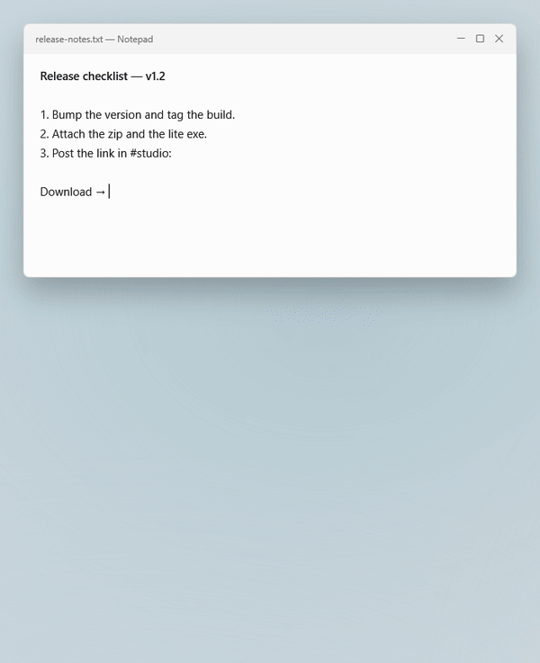
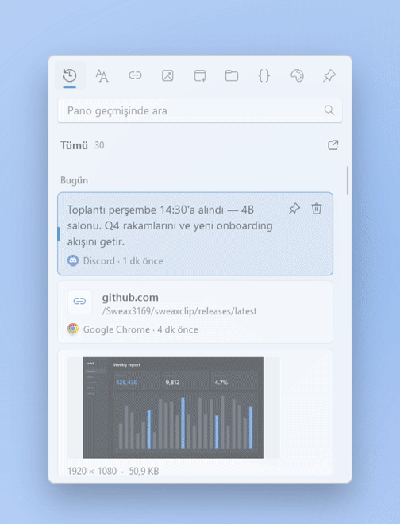
The panelPanel
A timeline of everything you copiedKopyaladığın her şeyin zaman çizelgesi
Every clip shows its content, with the time it was copied on the rail beside it. The one you select opens up, and everything moves on springs.Her kayıt kendi içeriğini gösterir, yanındaki çizgide kopyalandığı an durur. Seçtiğin açılır ve her şey yaylarla hareket eder.
- Text unfolds to seven lines, with the app it came from.Metin açılır, yedi satıra kadar; geldiği uygulamayla birlikte.
- Pictures grow into a real preview, with the text read from them.Görseller büyür, gerçek bir önizlemeye; içinden okunan yazıyla.
- Code keeps its colours, line breaks and indentation.Kod renklerini korur, satırlarını ve girintisini de.
- Links show the site, the full address and the page they came from.Bağlantılar siteyi gösterir, tam adresi ve geldiği sayfayı da.
- Opens where Windows does — under the cursor, or above the taskbar. If Start or Search is open, it closes them and pastes into Search.Windows'un açtığı yerde açılır — imlecin altında ya da görev çubuğunun üstünde. Başlat veya Arama açıksa onları kapatır, Arama'ya yapıştırır.
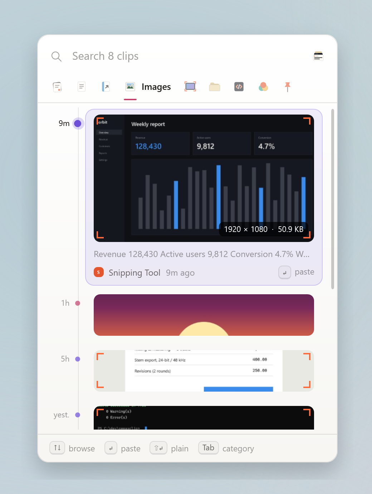
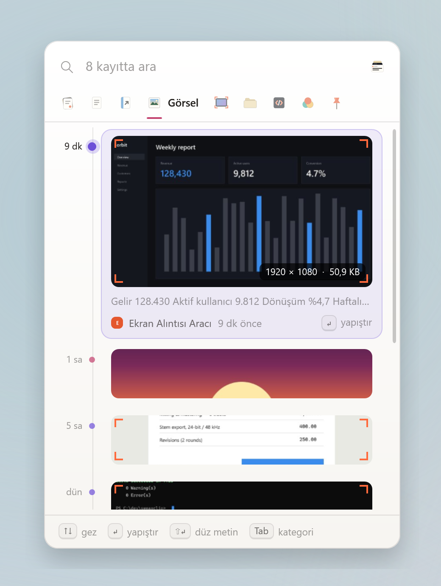
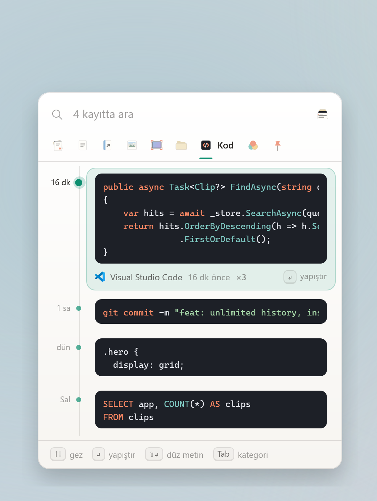
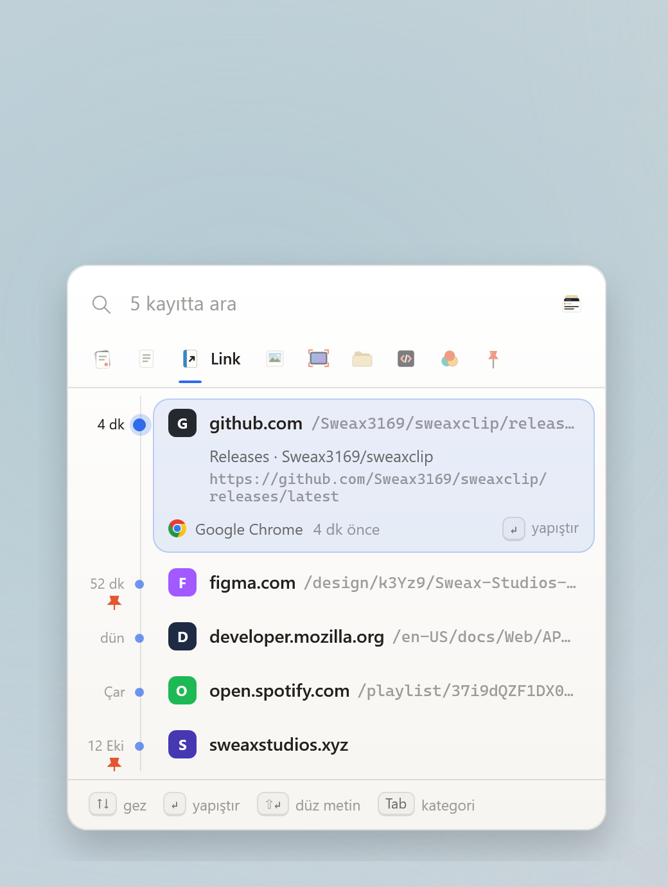
| Win V | Open or closeAç veya kapat |
| ↑ ↓ · PgUp PgDn | Walk through historyGeçmişte gez |
| Enter or clickveya tıkla | Paste where you were typingYazdığın yere yapıştır |
| Shift Enter | Paste as plain textDüz metin olarak yapıştır |
| Alt + 1–9 | Paste one of the nine newestEn yeni dokuzdan birini yapıştır |
| Tab · ← → | Change categoryKategori değiştir |
| Start typingYazmaya başla | Search, inside images tooAra, görsellerin içinde de |
| Ctrl P · Delete | Pin · move to TrashSabitle · Çöp'e taşı |
| Ctrl E | Show in the libraryKütüphanede göster |
Keyboard firstÖnce klavye
Never reach for the mouseFareye hiç uzanma
Everything in the panel has a key. Hold Alt and numbers appear on the rail: Alt + 2 pastes the clip before last without even looking. The shortcut itself can also be Ctrl Shift V or Ctrl Alt V.Paneldeki her şeyin bir tuşu var. Alt'a basılı tut, çizgide numaralar çıkar: Alt + 2 sondan bir önceki kaydı bakmadan yapıştırır. Kısayolun kendisi Ctrl Shift V veya Ctrl Alt V da olabilir.
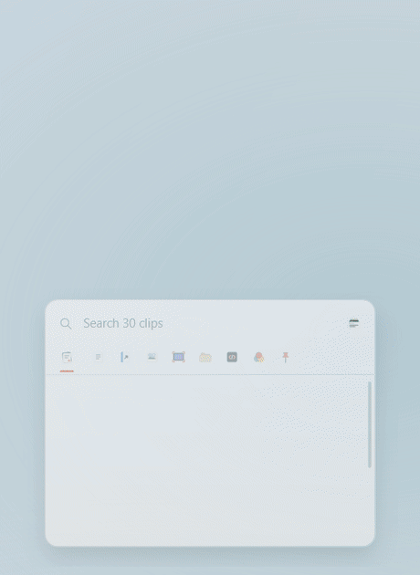
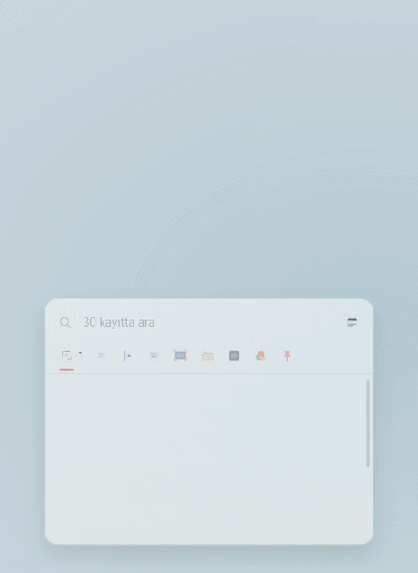
SearchArama
Find a screenshot by a word inside itEkran görüntüsünü içindeki bir kelimeyle bul
Every image is read once, in the background, by the OCR engine that ships with Windows. Its text is searched like everything else.Her görsel arka planda, Windows'la gelen OCR motoruyla bir kez okunur. Yazısı diğer her şey gibi aranır.
- The panel narrows as you type and glides to the size of what is left.Panel sen yazdıkça daralır ve kalanların boyuna süzülür.
- Matches are marked — in text, links, file names and the words read from pictures.Eşleşmeler işaretlenir — metinde, bağlantıda, dosya adında, görselden okunan yazıda.
- Case, accents and Turkish letters don't matter:
isikfindsışık.Büyük/küçük harf, aksan ve Türkçe karakter fark etmez:isikyazıncaışıkçıkar. - Part of a word is enough — the index is built from three-letter pieces.Kelimenin bir parçası yeter — dizin üç harflik parçalardan kurulur.
Copy text from screenEkrandan metin kopyala
Copy text you can't selectSeçemediğin yazıyı kopyala
Words inside a picture, a paused video, a shared slide, an error dialog, a game. Press Win + Shift + T, drag over the text, and it is on your clipboard.Bir görselin içindeki kelimeler, duraklatılmış bir video, paylaşılan bir slayt, bir hata penceresi, bir oyun. Win + Shift + T'ye bas, yazının üstünden sürükle; yazı panoda.
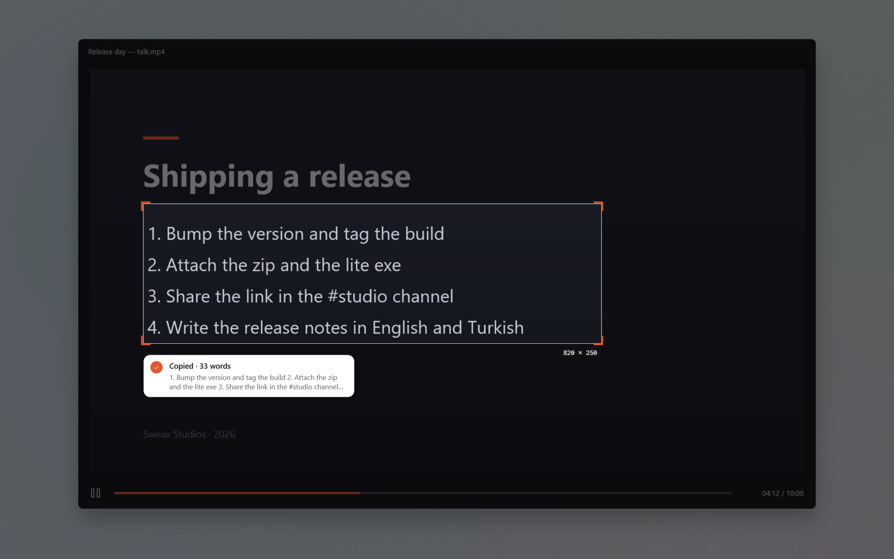
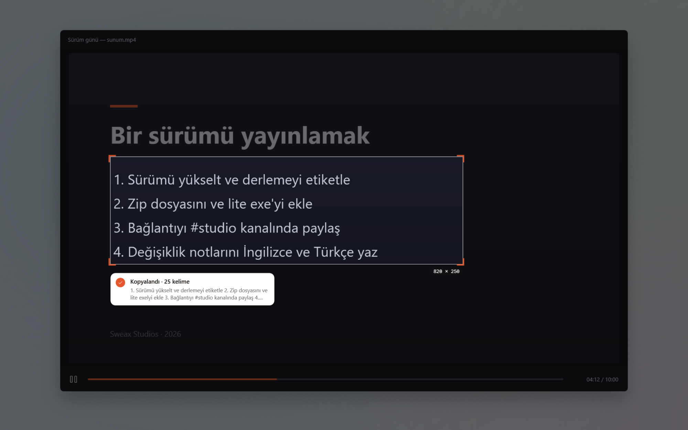
- The screen freezes under a dim layer, so a video can't move on while you select.Ekran donar, koyu bir katmanın altında durur; seçerken video ilerlemez.
- Drag, let go, done. A note beside the box shows how many words were copied and the first of them.Sürükle, bırak, bitti. Kutunun yanındaki not kaç kelimenin kopyalandığını ve ilk kelimeleri gösterir.
- Every monitor, any shortcut. Record your own in Settings → General; Esc or a right-click cancels.Her monitörde, istediğin kısayolla. Ayarlar → Genel'den kendi kısayolunu kaydet; Esc ya da sağ tık iptal eder.
- Read on your PC by the Windows OCR engine — light-on-dark text is cleaned up first. The text lands in your history too.Bilgisayarında okunur, Windows'un OCR motoruyla — koyu zemindeki açık yazı önce temizlenir. Yazı geçmişine de düşer.
The libraryKütüphane
Everything you ever copied, on one deskKopyaladığın her şey, tek bir masada
Each clip is drawn as the thing it is — paper for text, slate for code, a print for an image, a frame with crop marks for a screenshot, a folder for files. Click one to pick it up and see all of it.Her kayıt kendi nesnesi olarak çizilir — metin için kâğıt, kod için arduvaz, görsel için baskı, ekran görüntüsü için kırpma işaretli çerçeve, dosyalar için klasör. Birine tıkla, eline al, hepsini gör.
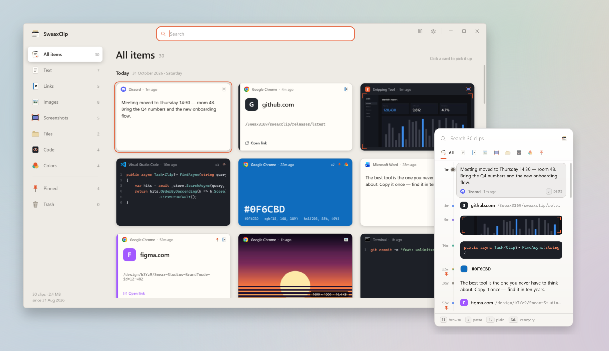
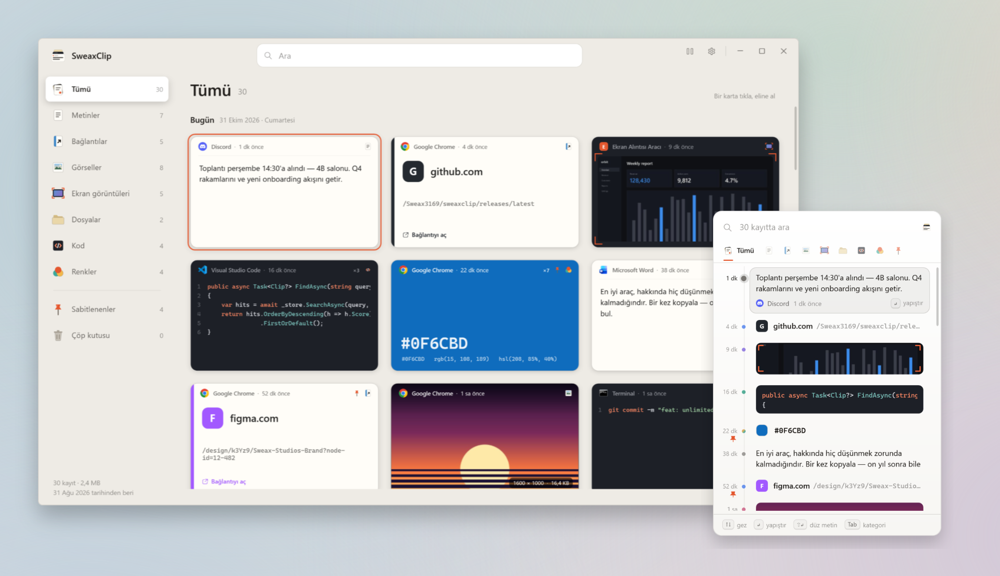
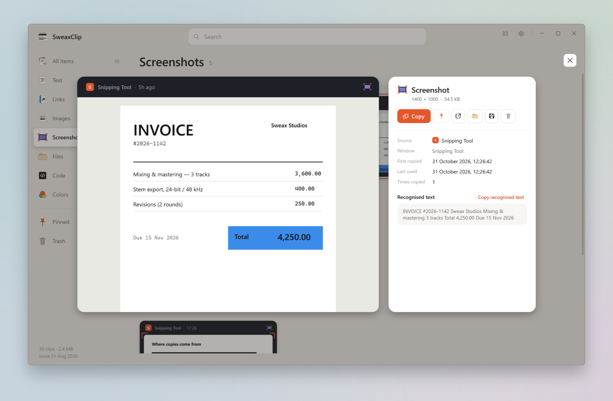
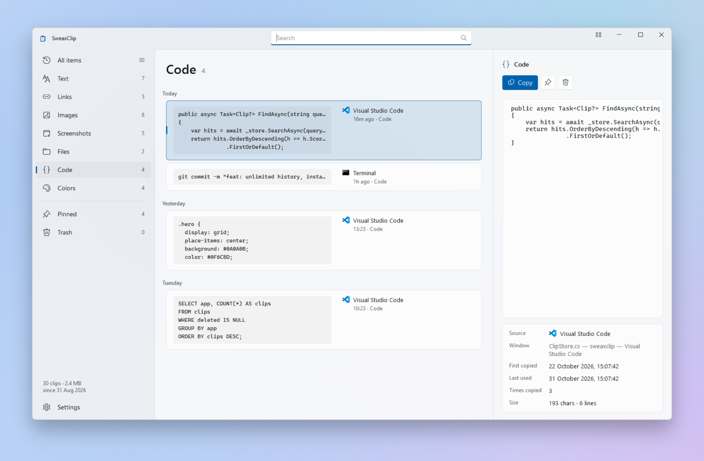
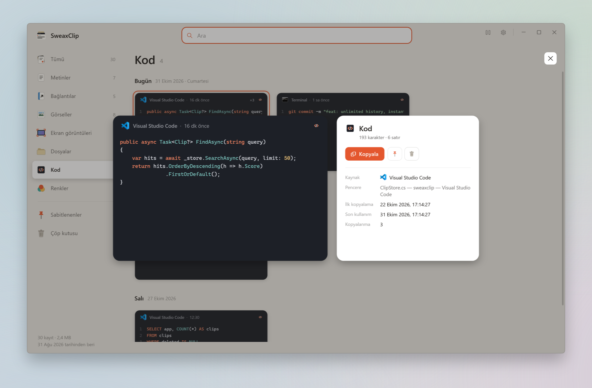
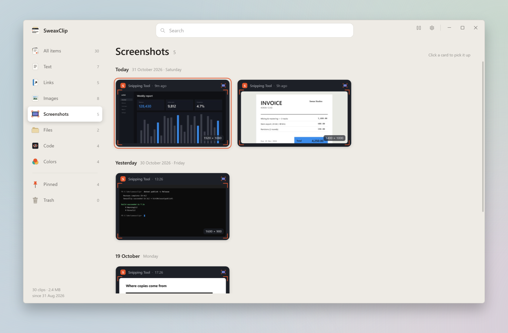
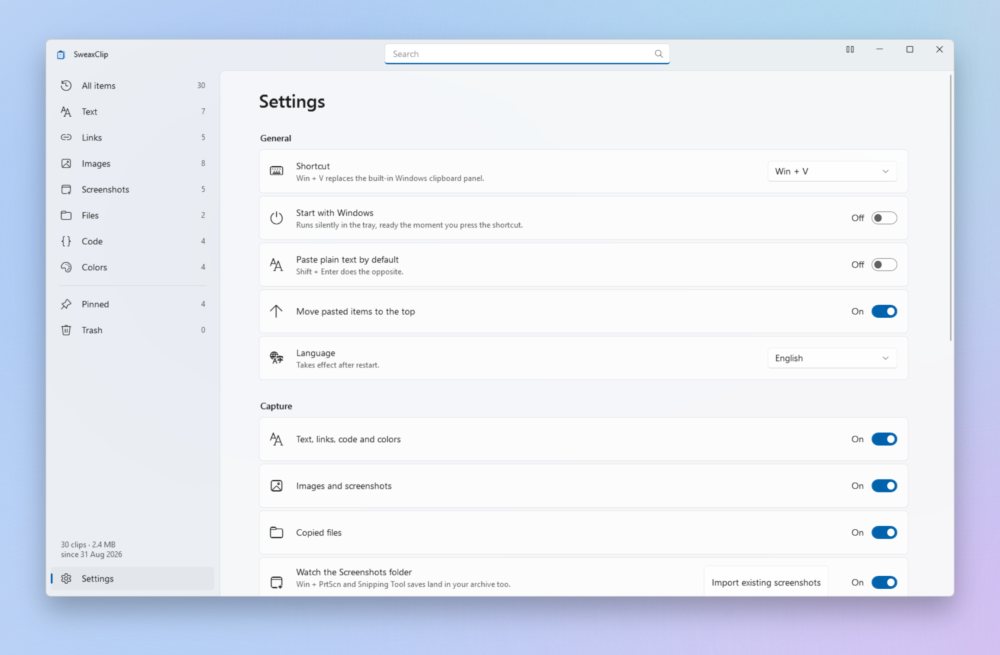
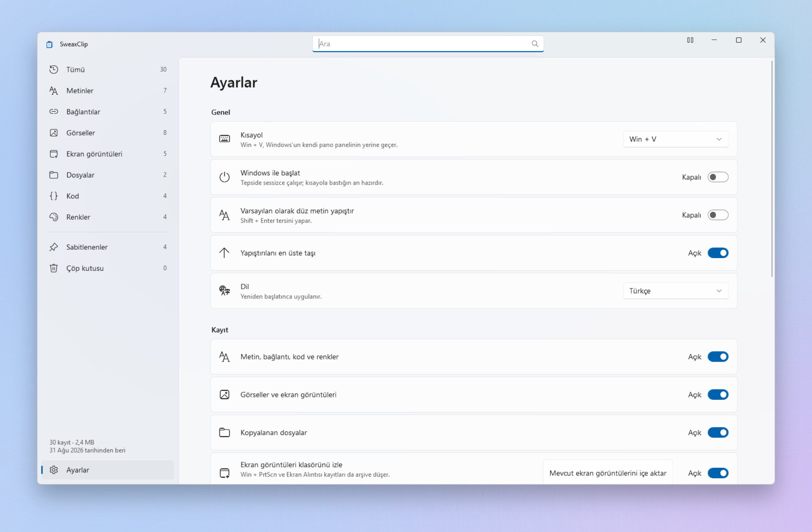
Make it yoursSana göre ayarla
Seven palettes, two panel stylesYedi palet, iki panel stili
Settings → Appearance changes the whole app at once, without a restart: Timeline or Deck; light, dark or following Windows; and seven palettes that recolour everything — surfaces, accent, and the paper, folders and slate of the cards.Ayarlar → Görünüm uygulamanın tamamını yeniden başlatmadan değiştirir: Zaman çizelgesi ya da Deste; açık, koyu ya da Windows'u izleyen tema; ve her şeyi yeniden renklendiren yedi palet — yüzeyler, vurgu rengi, kartların kâğıdı, klasörü ve arduvazı.
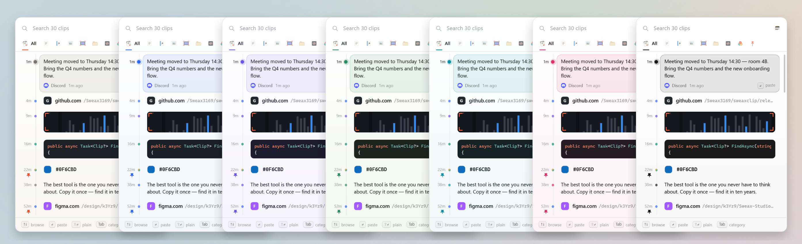
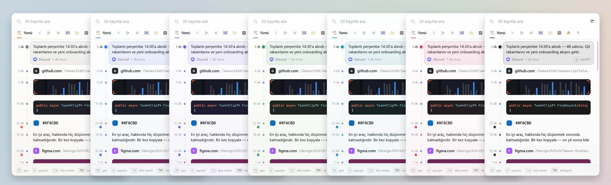
Ember · Graphite · Midnight · Sage · Ocean · Rose · MonoKor · Grafit · Gece · Adaçayı · Okyanus · Gül · Mono
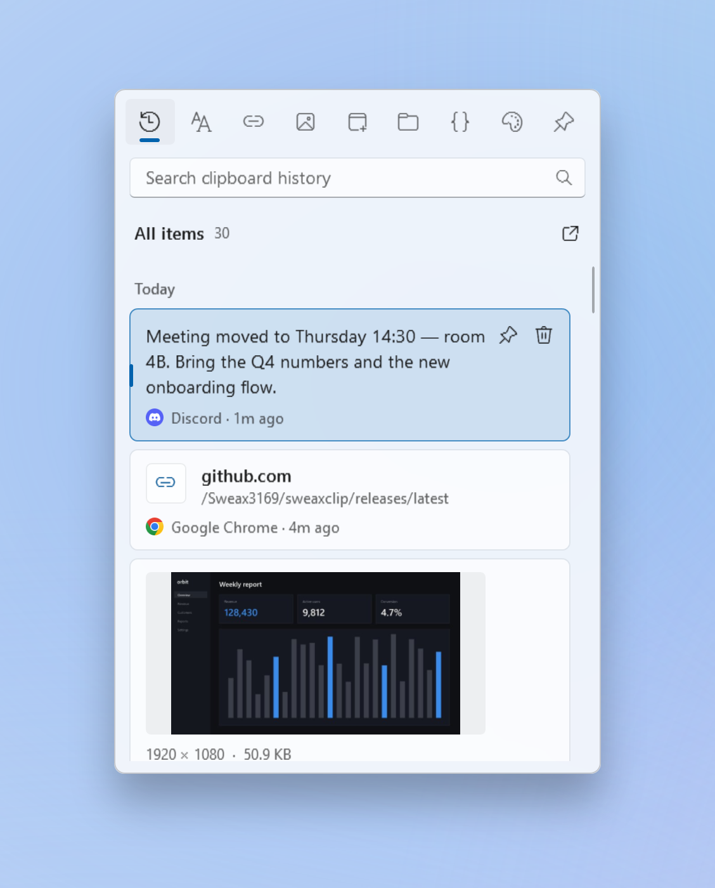
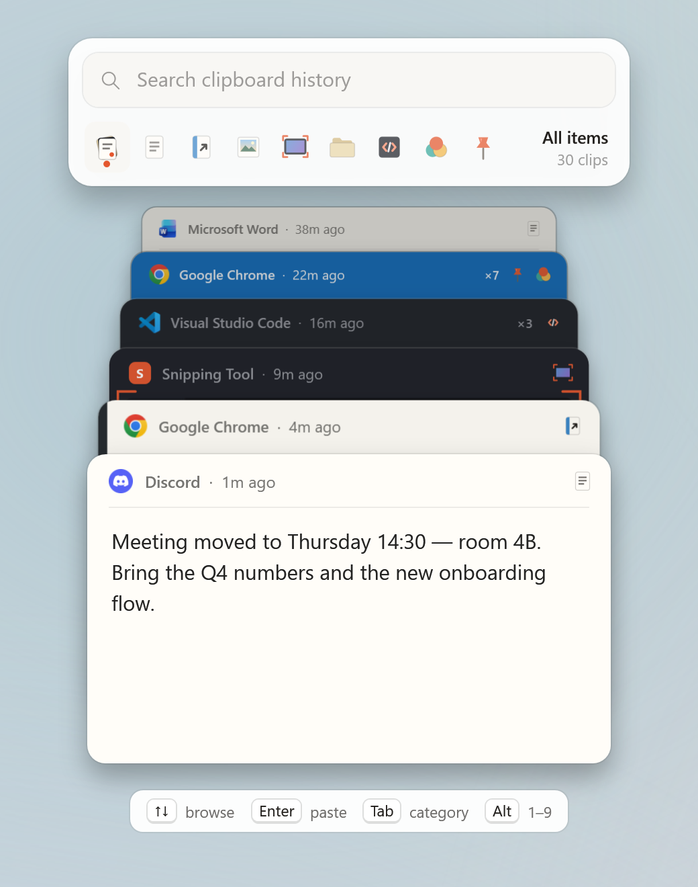
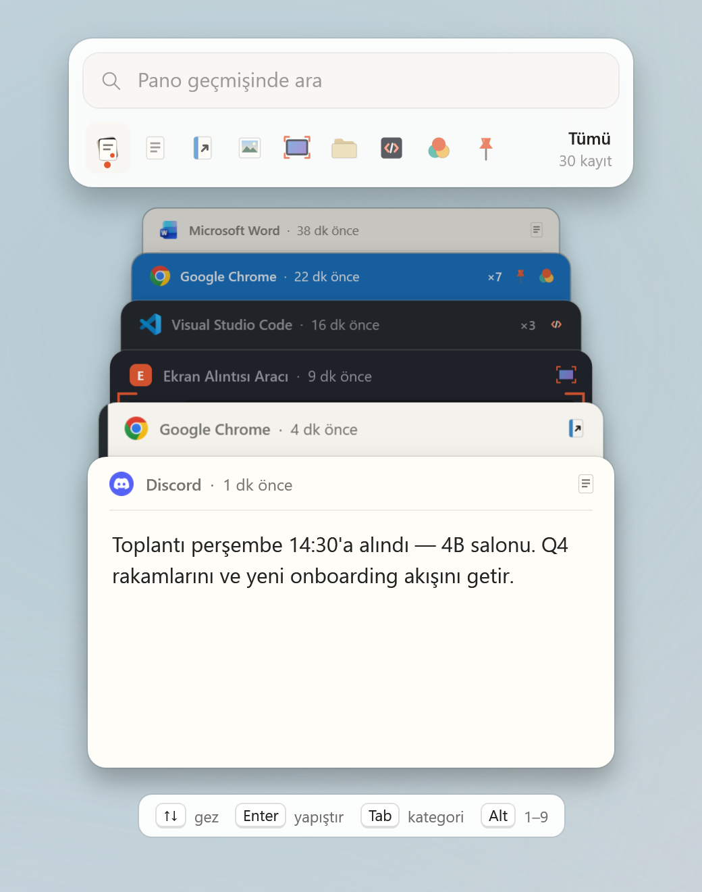
Compared with WindowsWindows ile karşılaştırma
What changes when you switchGeçince neler değişir
| Windows clipboard historyWindows pano geçmişi | SweaxClip | |
|---|---|---|
| Items keptTutulan öğe | 25 | UnlimitedSınırsız |
| After a restartYeniden başlatınca | Cleared, except pinnedSilinir, sabitlenenler hariç | KeptKalır |
| ImagesGörseller | Up to 4 MBEn fazla 4 MB | Any size, losslessHer boyut, kayıpsız |
| SearchArama | — | Full text, inside images tooTam metin, görsellerin içinde de |
| CategoriesKategoriler | — | 7, plus Pinned and Trash7, artı Sabitlenenler ve Çöp |
| Copied filesKopyalanan dosyalar | — | Kept, pasted back as filesSaklanır, dosya olarak yapıştırılır |
| Where each clip came fromHer kaydın kaynağı | — | App, window, time, usesUygulama, pencere, zaman, kullanım |
| BackupsYedek | — | Daily, plus .zip exportGünlük, artı .zip dışa aktarma |
Under the hoodNasıl çalışır
Small, fast, and built to last yearsKüçük, hızlı, yıllarca dayanacak şekilde
Native C# and WPF on .NET 9, talking to Windows directly. One SQLite file you can back up, move or open with any tool..NET 9 üzerinde yerel C# ve WPF, doğrudan Windows'la konuşur. Yedekleyebileceğin, taşıyabileceğin, her araçla açabileceğin tek bir SQLite dosyası.
No pollingYoklama yok
Windows tells SweaxClip when something is copied (AddClipboardFormatListener). Idle means zero CPU.
Bir şey kopyalandığında Windows SweaxClip'e haber verir (AddClipboardFormatListener). Boştayken işlemci sıfır.
Survives a power cutElektrik kesintisine dayanır
SQLite in WAL mode with synchronous=FULL; images stored once each, named by SHA-256. A copy every day.
WAL modunda, synchronous=FULL SQLite; görseller SHA-256 adıyla bir kez saklanır. Her gün bir yedek.
Never takes focusOdak almaz
The panel opens in about 30 ms and leaves the app you are typing in focused, so Ctrl + V lands at your text cursor. It runs on a thread of its own and stays in memory, so nothing — not a busy build, not a slow app's clipboard — holds Win+V up.
Panel yaklaşık 30 ms'de açılır ve yazdığın uygulamanın odağına dokunmaz; Ctrl + V yazı imlecine düşer. Kendi iş parçacığında çalışır ve bellekte kalır; ne ağır bir derleme ne de yavaş bir uygulamanın panosu Win+V'yi bekletebilir.
InstallKurulum
Three steps, one minuteÜç adım, bir dakika
Windows 10 (2004) or Windows 11, 64-bit. Nothing else to install.Windows 10 (2004) veya Windows 11, 64 bit. Başka hiçbir şey kurman gerekmez.
Run SweaxClip.exeSweaxClip.exe'yi çalıştır
It installs itself, starts with Windows and adds the screenshots you already have.
Kendini kurar, Windows ile başlar ve zaten olan ekran görüntülerini ekler.
Press Win + VWin + V'ye bas
From now on, nothing you copy is lost.
Bundan sonra kopyaladığın hiçbir şey kaybolmaz.
The executable isn't code-signed yet, so SmartScreen may warn you — choose More info → Run anyway. Every release is built from the public source by GitHub Actions and lists SHA-256 checksums.
Uygulama henüz kod imzalı değil; SmartScreen uyarabilir — Ek bilgi → Yine de çalıştır'ı seç. Her sürüm açık kaynak koddan GitHub Actions ile derlenir ve SHA-256 özetleri listelenir.
QuestionsSorular
Good to knowBilmekte fayda var
Does it turn off the Windows clipboard history?Windows pano geçmişini kapatıyor mu?
No Windows setting is changed. SweaxClip receives Win + V before Windows does; choose another shortcut and the Windows panel comes back on Win + V.
Hiçbir Windows ayarı değişmez. SweaxClip Win + V'yi Windows'tan önce alır; başka bir kısayol seçersen Win + V yine Windows panelini açar.
How much disk space does it use?Ne kadar disk alanı kullanır?
Text takes very little — tens of thousands of clips fit in tens of megabytes. Images take most of the space; the library shows the total.
Metin çok az yer tutar — on binlerce kayıt onlarca megabayta sığar. Yerin çoğunu görseller kaplar; kütüphane toplamı gösterir.
Pasting doesn't work in some apps.Bazı uygulamalarda yapıştırma çalışmıyor.
Windows doesn't let apps send keys to programs running as administrator. Run SweaxClip as administrator too, or press Ctrl + C in the panel and paste yourself.
Windows, uygulamaların yönetici olarak çalışan programlara tuş göndermesine izin vermez. SweaxClip'i de yönetici olarak çalıştır ya da panelde Ctrl + C'ye basıp kendin yapıştır.
Which languages can it read in screenshots?Ekran görüntülerinde hangi dilleri okur?
The languages whose OCR component is installed in Windows — usually the languages you have added to Windows.
OCR bileşeni Windows'ta yüklü olan diller — genelde Windows'a eklediğin diller.
How do I move my history to another PC?Geçmişimi başka bilgisayara nasıl taşırım?
Settings → Storage → Export archive, then extract the .zip into %LOCALAPPDATA%\SweaxClip on the new PC before starting SweaxClip there.
Ayarlar → Depolama → Arşivi dışa aktar; ardından yeni bilgisayarda SweaxClip'i başlatmadan önce .zip'i %LOCALAPPDATA%\SweaxClip içine aç.
Is it really free?Gerçekten ücretsiz mi?
Yes. It is open source under the MIT license, with no ads, no account and no paid tier.
Evet. MIT lisanslı açık kaynak; reklam, hesap ya da ücretli sürüm yok.
Stop losing what you copy.Kopyaladıklarını kaybetmeyi bırak.
Free, open source, and on your PC in a minute.Ücretsiz, açık kaynak, bir dakikada bilgisayarında.